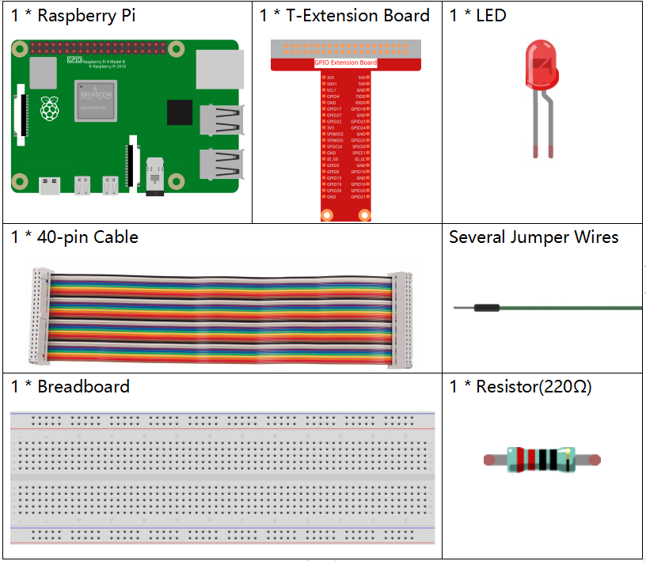
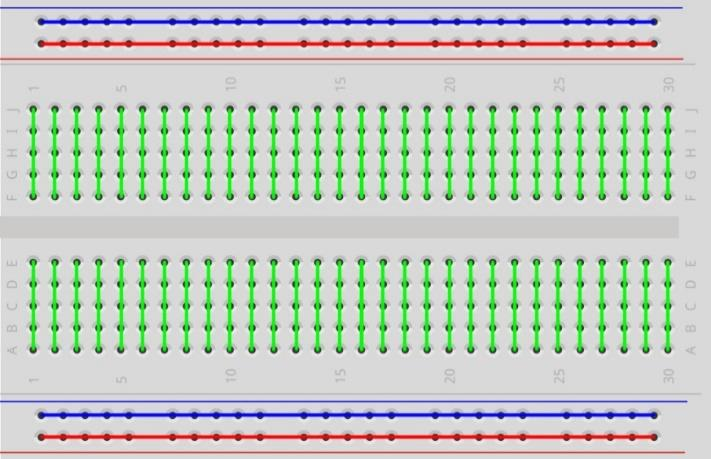
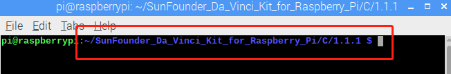

Note
Bonjour et bienvenue dans la communauté SunFounder pour les passionnés de Raspberry Pi, Arduino et ESP32 sur Facebook ! Plongez au cœur de l’univers de Raspberry Pi, Arduino et ESP32 avec d’autres passionnés.
Pourquoi nous rejoindre ?
Support d’experts : Résolvez les problèmes après-vente et relevez des défis techniques avec l’aide de notre communauté et de notre équipe.
Apprendre et partager : Échangez des conseils et des tutoriels pour perfectionner vos compétences.
Aperçus exclusifs : Profitez d’un accès anticipé aux annonces de nouveaux produits et à des avant-premières.
Réductions spéciales : Bénéficiez de réductions exclusives sur nos derniers produits.
Promotions festives et cadeaux : Participez à des tirages au sort et à des promotions spéciales lors des fêtes.
👉 Prêt à explorer et à créer avec nous ? Cliquez sur [Ici] et rejoignez-nous dès aujourd’hui !
1.1.1 LED Clignotante
Introduction
Dans cette leçon, nous allons apprendre à programmer une LED clignotante. Grâce à vos réglages, la LED peut produire une série d’effets intéressants. Alors, c’est parti !
Composants
{kind=link}
Note
Pour mener à bien cette expérience, vous devez disposer de votre propre Raspberry Pi, d’une carte TF et d’une alimentation compatible Raspberry Pi.
Principe
Plaque d’essai (Breadboard)
Une plaque d’essai est une base de construction utilisée pour le prototypage de circuits électroniques. Elle permet de construire et de tester rapidement des circuits avant la finalisation de tout design. Elle contient de nombreux trous dans lesquels vous pouvez insérer les composants mentionnés précédemment, comme des circuits intégrés, des résistances et des fils de connexion. La plaque d’essai permet d’ajouter et de retirer facilement les composants.
L’image montre la structure interne d’une plaque d’essai complète. Bien que ces trous paraissent indépendants les uns des autres, ils sont en réalité reliés entre eux par des bandes métalliques.
LED
Une LED (diode électroluminescente) est un type de diode. Elle s’allume uniquement si sa patte longue est connectée à la borne positive et sa patte courte à la borne négative.


La LED ne doit pas être connectée directement à une source d’alimentation car cela pourrait l’endommager. Une résistance de 160Ω ou plus (pour une alimentation en 5V) doit être connectée en série dans le circuit de la LED.
Résistance
Une résistance est un composant électronique qui limite le courant dans un circuit. Une résistance fixe est un type de résistance dont la valeur ne peut pas être modifiée, contrairement à un potentiomètre ou une résistance variable.
Dans ce kit, nous utilisons des résistances fixes. Elles sont essentielles dans le circuit pour protéger les composants connectés. Les images suivantes montrent une résistance de 220Ω ainsi que deux symboles couramment utilisés dans les schémas électroniques. Ω est l’unité de mesure de la résistance, et les unités supérieures incluent KΩ, MΩ, etc. Leur relation est la suivante : 1 MΩ = 1000 KΩ, 1 KΩ = 1000 Ω. En général, la valeur de la résistance est indiquée dessus. Si vous voyez ces symboles dans un schéma, cela signifie qu’il y a une résistance.


Lorsque vous utilisez une résistance, il est important de connaître sa valeur. Voici deux méthodes : observer les bandes de couleur sur la résistance ou utiliser un multimètre pour mesurer sa valeur. Nous vous recommandons la première méthode, car elle est plus pratique et rapide.

Schéma de câblage
Dans cette expérience, connectez une résistance de 220Ω à l’anode (la longue patte de la LED), puis reliez la résistance à 3,3 V, et connectez la cathode (la patte courte) de la LED au GPIO17 du Raspberry Pi. Ainsi, pour allumer la LED, nous devons configurer le GPIO17 à un niveau bas (0V). Nous pouvons obtenir ce résultat par programmation.
Note
Pin11 correspond au 11ème pin du Raspberry Pi, de gauche à droite, et ses numéros correspondants wiringPi et BCM sont indiqués dans le tableau ci-dessous.
Dans les contenus en langage C, nous utilisons GPIO0 comme équivalent de 0 dans wiringPi. Dans les contenus en langage Python, BCM 17 correspond à 17 dans la colonne BCM du tableau. En même temps, ils correspondent tous deux au 11ème pin sur le Raspberry Pi, soit le Pin 11.
T-Board Name |
physical |
wiringPi |
BCM |
GPIO17 |
Pin 11 |
0 |
17 |
{kind=link}
Procédures expérimentales
Étape 1 : Construisez le circuit.

Étape 2 : Accédez au dossier du code.
Si vous utilisez un écran, suivez les étapes suivantes.
Allez à ~/ et trouvez le dossier davinci-kit-for-raspberry-pi.
Trouvez le dossier C, faites un clic droit et sélectionnez Ouvrir dans le terminal.

Ensuite, une fenêtre s’ouvrira comme illustré ci-dessous. Vous avez maintenant accédé au chemin du code 1.1.1_BlinkingLed.c.
{kind=link}
Dans les leçons suivantes, nous utiliserons des commandes pour accéder au fichier de code au lieu de faire un clic droit. Mais vous pouvez choisir la méthode qui vous convient le mieux.
Si vous vous connectez au Raspberry Pi à distance, utilisez la commande
cdpour changer de répertoire :
cd ~/davinci-kit-for-raspberry-pi/c/1.1.1/
Note
Changer le répertoire pour accéder au chemin du code de cette expérience via la commande cd.
Dans tous les cas, vous êtes maintenant dans le dossier C. Les procédures suivantes, basées sur ces deux méthodes, sont identiques. Continuons.
Étape 3 : Compiler le code
gcc 1.1.1_BlinkingLed.c -o BlinkingLed -lwiringPi
Note
gcc est le GNU Compiler Collection. Ici, il est utilisé pour compiler le fichier en C 1_BlinkingLed.c et générer un fichier exécutable.
- Dans la commande,
-osignifie « output » (le caractère suivant immédiatement -oest le nom du fichier généré après la compilation, et un exécutable nomméBlinkingLedsera créé ici) et-lwiringPiindique de charger la bibliothèque wiringPi (lest l’abréviation de library).
Étape 4 : Exécuter le fichier exécutable généré à l’étape précédente.
sudo ./BlinkingLed
Note
Pour contrôler le GPIO, vous devez exécuter le programme avec la commande
sudo (superuser do). La commande ./ indique le répertoire actuel. La
commande complète permet de lancer BlinkingLed dans le répertoire actuel.

Après l’exécution du code, vous verrez la LED clignoter.
Note
Si cela ne fonctionne pas après l’exécution ou s’il y a un message d’erreur : « wiringPi.h: Aucun fichier ou dossier de ce type », veuillez vous référer à C code is not working?.
- Si vous souhaitez modifier le fichier de code
1.1.1_BlinkingLed.c, appuyez sur Ctrl + Cpour arrêter l’exécution du code. Ensuite, tapez la commande suivante pour l’ouvrir :
nano 1.1.1_BlinkingLed.c
Note
nano est un éditeur de texte. Cette commande est utilisée pour ouvrir le
fichier de code 1.1.1_BlinkingLed.c avec cet outil.
Appuyez sur Ctrl+X pour quitter. Si vous avez modifié le code, une invite vous
demandera si vous souhaitez enregistrer les modifications ou non. Tapez Y
(enregistrer) ou N (ne pas enregistrer). Ensuite, appuyez sur Entrée pour quitter.
Répétez les Étapes 3 et 4 pour voir l’effet après modification.

Code
Le programme est le suivant :
#include <wiringPi.h>
#include <stdio.h>
#define LedPin 0
int main(void)
{
// Si l'initialisation de wiringPi échoue, afficher un message à l'écran
if(wiringPiSetup() == -1){
printf("setup wiringPi failed !");
return 1;
}
pinMode(LedPin, OUTPUT); // Définir LedPin comme sortie pour y écrire des valeurs.
while(1){
// LED allumée
digitalWrite(LedPin, LOW);
printf("...LED on\n");
delay(500);
// LED éteinte
digitalWrite(LedPin, HIGH);
printf("LED off...\n");
delay(500);
}
return 0;
}
Explication du Code
include <wiringPi.h>
La bibliothèque de gestion matérielle est conçue pour le langage C du Raspberry Pi. L’ajout de cette bibliothèque facilite l’initialisation matérielle ainsi que la gestion des sorties I/O, PWM, etc.
#include <stdio.h>
Bibliothèque standard d’E/S. La fonction printf, utilisée pour afficher les données à l’écran, est fournie par cette bibliothèque. De nombreuses autres fonctions de traitement y sont également disponibles pour des explorations supplémentaires.
#define LedPin 0
Le GPIO17 de la carte d’extension T correspond au GPIO0 dans wiringPi. On assigne GPIO0 à LedPin, ce qui signifie que LedPin représente GPIO0 dans le code.
if(wiringPiSetup() == -1){
printf("setup wiringPi failed !");
return 1;
Cette commande initialise wiringPi et suppose que le programme appelant utilise le schéma de numérotation de pins de wiringPi.
Cette fonction doit être appelée avec les privilèges root. En cas d’échec de l’initialisation, un message est imprimé à l’écran. La fonction « return » est utilisée pour sortir de la fonction en cours. Utiliser return dans la fonction main() terminera le programme.
pinMode(LedPin, OUTPUT);
Définir LedPin comme sortie pour y écrire des valeurs.
digitalWrite(LedPin, LOW);
Définir GPIO0 à 0V (niveau bas). Étant donné que la cathode de la LED est connectée
à GPIO0, la LED s’allume si GPIO0 est défini sur bas. À l’inverse, si GPIO0 est défini
sur un niveau haut, digitalWrite (LedPin, HIGH) : la LED s’éteindra.
printf("...LED off\n");
La fonction printf est une fonction de bibliothèque standard et son prototype se
trouve dans le fichier d’en-tête « stdio.h ». La forme générale de l’appel est :
printf(" chaîne de contrôle de format ", colonnes de la table de sortie). La
chaîne de contrôle de format sert à spécifier le format de sortie, elle est divisée
en chaîne de format et chaîne non formatée. La chaîne de format commence par “%” suivie
de caractères de format, comme “%d” pour une sortie d’entier décimal. Les chaînes non
formatées sont imprimées telles quelles. Ce qui est utilisé ici est une chaîne non
formatée, suivie de « n », un caractère de nouvelle ligne représentant un saut de ligne
automatique après l’impression d’une chaîne.
delay(500);
Le délai de 500 ms maintient l’état HIGH ou LOW actuel pendant 500ms.
Il s’agit d’une fonction qui suspend le programme pendant un certain temps. Et la vitesse d’exécution du programme est déterminée par notre matériel. Ici, nous allumons ou éteignons la LED. Sans la fonction de délai, le programme s’exécuterait très rapidement en boucle continue. La fonction delay nous aide donc à écrire et à déboguer le programme.
return 0;
Généralement placée à la fin de la fonction principale, elle indique que la fonction renvoie 0 après une exécution réussie.